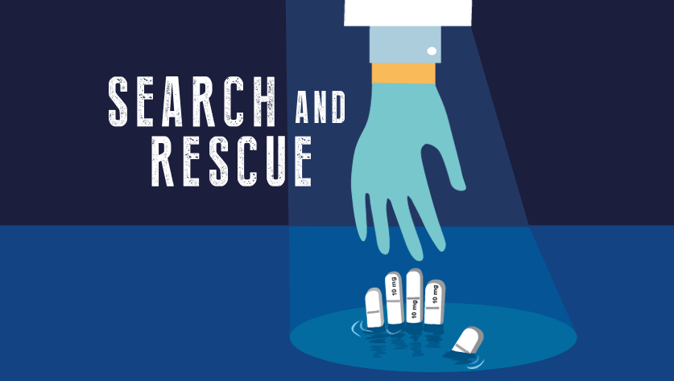

Prescription Drug Monitoring Program (PDMP)
Prescription Drug Monitoring Program (PDMP)
The Prescription Drug Monitoring Program (PDMP) is an online database which houses prescribing and dispensing data for patients per state. The PDMP helps identify when a patient obtains multiple prescriptions from different practitioners—which may indicate the patient is misusing or addicted to prescription drugs.9,10
Using Your State's PDMP
Daniel P. Alford, MD, MPH, FACP
Select Your State to Access or Register for Your PDMP
Talking to Your Patients About Potential Prescription Medicine Misuse
Case Study: Questionable activity in an established patient
Watch a quick video showing how to speak with an established patient whom you suspect may be misusing opioid prescriptions.
Watch Established Patient ExampleCase Study: Questionable activity in a new patient
Watch a quick video that shows how to speak with a new patient whom you suspect may be misusing opioid prescriptions.
Watch New Patient ExampleEach year, more Americans die from prescription opioids than gun violence11
I am asking for your help to solve an urgent health crisis facing America: the opioid epidemic. Everywhere I travel, I see communities devastated…
References
The Partnership for Drug-Free Kids wishes to acknowledge that this work was supported by the U.S. Food and Drug Administration, Center for Drug Evaluation and Research, under grant number 5U18FD004593-04. The content is solely the responsibility of the Partnership and does not necessarily represent the official views of the U.S. Food and Drug Administration.